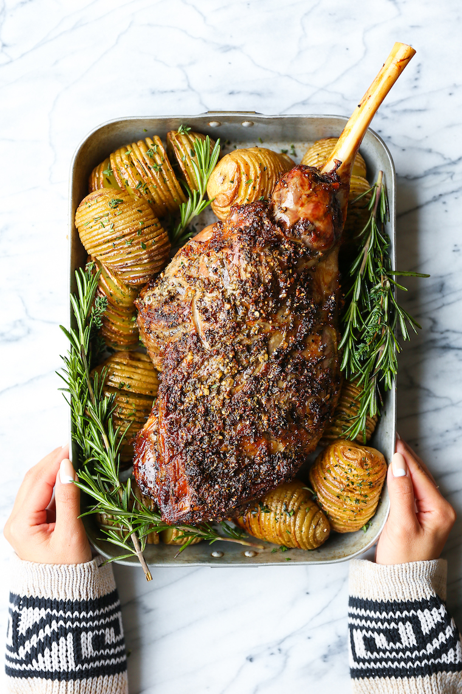

Lamb Recipe

Description
I know, it seems incredibly daunting but it’s so much easier than you think.
It’s fool-proof and fuss-free. And you don’t even need a long drawn-out ingredient list.
Marinating is also not needed here – you’ll see that the simple garlic mixture of this
recipe will bring in so much flavor.And it’s sure to be a crowd-please for your Easter holiday
or your next dinner party. It also pairs perfectly with these mini hasselback potatoes!
Ingredients
- 1 (5 to 6 pound) trimmed bone-in leg of lamb
- 4 cloves garlic, minced
- 1 tablespoon olive oil
- 1 tablespoon chopped fresh rosemary
- 1 tablespoon chopped fresh thyme leaves
- 1 tablespoon Dijon mustard
- 1 tablespoon kosher salt
- 2 teaspoons ground black pepper
Steps
- Preheat oven to 350 degrees F. Line a roasting pan with aluminum foil.
- Pat lamb dry with paper towels. Using a sharp knife, score the top side of the lamb by making shallow cuts all over.
- In a small bowl, combine garlic, olive oil, rosemary, thyme, Dijon, salt and pepper.
- Place lamb, fat side up, on a rack in the prepared roasting pan. Spread garlic mixture evenly over the lamb, rubbing in thoroughly into the scored cuts.
- Place into oven and roast until it reaches an internal temperature of 135 degrees F for
medium, about 1 hour 30 minutes to 1 hour 45 minutes, or until desired doneness. Let rest 15 minutes before slicing.
- Serve immediately with mini hasselback potatoes.